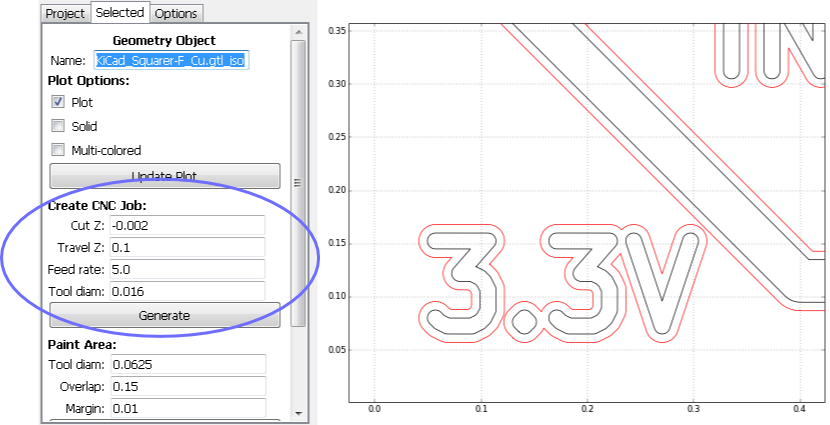
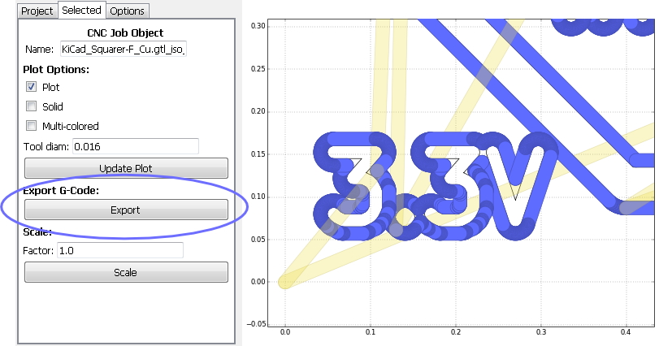
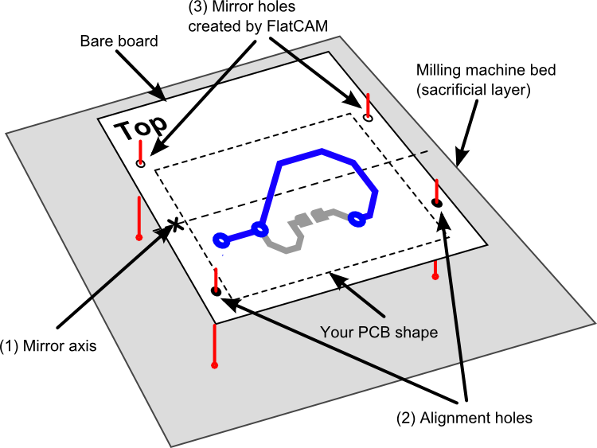
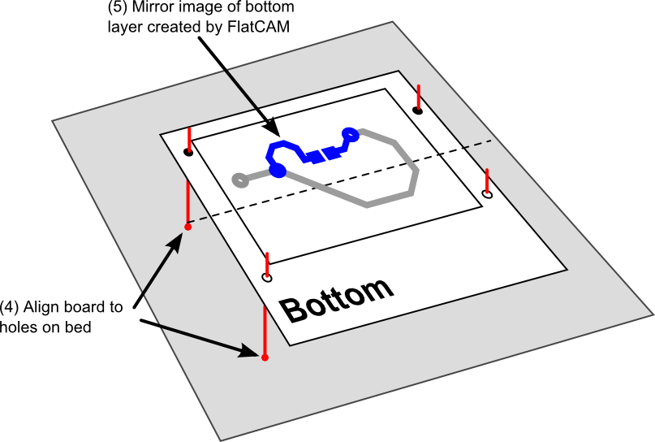
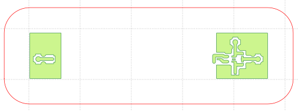

Common Procedures¶
Isolation Routing¶
Isolation routing is the operation of cutting copper around traces for electrical isolation.
- Open a Gerber file: File→Open Gerber…
The file is automatically analyzed, processed and plotted.
- Enter the diameter of the tool you will use for isolation routing and hit “Generate Geometry”. The units are determined by the project setting and are shown on the bottom right of the screen. If you want to work using different units, go to Options, Project Options (Combo box), Units. This will change the units for the whole project.
This creates a new geometry object listed under “Project” with the same name as the Gerber object with an “_iso” postfix, and its options are shown in “Selected”. Zoom into the plot (click over the plot and use the ‘2’ and ‘3’ keys to zoom in and out) to inspect the results.
- Create a CNC job from the new geometry by indicating the desired parameters as shown in the figure above and explained below:
- Cut Z: The depth of the tool while cutting. -2 mils or -0.05 mm are a typical value for isolation routing.
- Travel Z: The height above the board at which the cutting tool will travel when not cutting copper.
- Feedrate: The speed of the cutting tool while cutting in inches/minute of mm/minute depending on the project settings.
- Tool diam.: The cutting tool diameter. Use the same value as when creating the isolation routing geometry in step 2.
A CNC Job object has been added to your project and its options are shown in the “Selected” tab. Tool paths are shown on the plot. Blue are copper cuts, while yellow are travelling (no cutting) motions.
Click on the “Export” button under “Export G-Code”. This will open a dialog box for you to save to a file. This is the file that you will supply to your CNC router.
Wide Isolation Routing¶
- Go to the “Project” tab and double-click on the isolation geometry object that you created for the 1st pass. In the “Selected” tab, change its name and hit Enter.
- Go back to “Project” and double-click on the Gerber object. This takes you back to step 1 of tutorial 4.1. We will generate geometry for a second pass in the same way but with a larger offset. If “Tool diam” reads 0.016, enter 0.016*2.5 instead (0.016*3 would put the path 3 times as far which provides no overlap with the previous pass. By setting it to 0.016*2.5 you ensure that there is no copper left on the board and a cleaner finish). Click on “Generate Geometry” just like in tutorial 4.1 and you should get something like the figure below.
- Generate a CNC job like you did in part 3 of tutorial 4.1. You will end up with 2 G-Code file, one for each pass.
CNC Jobs for Drill Files¶
- Open a drill (Excellon) file: File→Open Excellon. The drill file will be drawn onto the plot and its options form should show up.
- A drill file will usually contain different tools (drill diameters). You can choose to create a CNC job for each individual tool or bundle some of the tools together in the same job (in case you did not intend to use drill bits of different diameters). Click on “Choose” under “Create CNC Job” to open a selection window with the list of tools. Each has the format “id”: “diameter”, where the diameter is in the project’s units. Check the boxes by the tools you want to include in the job. The comma-separated list of tools should appear in the “Tools” entry box (Note: If you know the ids of the tools you can type the list yourself).
- Adjust “Drill Z” (Drilling depth), “Travel Z” (Height for X-Y movement) and “Feed rate” (Z-axis speed in project units per minute) to your desired values, and click on “Generate”.

A CNC job will be created and the tool-path will be shown on the screen. Click on “Export G-Code” as explained in tutorial 4.1 to save the generated CNC job to G-Code.
2-side PCB¶
The main idea behind this process is to ensure that when you turn your board around to mill the bottom side of your PCB it will be perfectly aligned with the top side.
The mechanical alignment is accomplished by using alignment holes/pins. These are holes on your board and on the milling machine bed (typically a board of wood, known as “sacrificial” layer). Pins are used to align the holes on the board to the holes on the sacrificial layer. The holes are always pairs of holes that are symmetrical about a mirror axis. This ensures that when you turn your board around, the board can be aligned using the same alignment holes as before.
The bottom layer must be flipped (mirrored) around the same axis that was used for the alignment holes.
The placement of the mirror axis can be very arbitrary. You just need to make sure that after flipping the board around, it will still fit on the milling machine bed. Same for the alignment holes. It doesn’t matter much where you put them. Perhaps if you have a large bare copper board and you plan on reusing the alignment holes for different projects that will be made out of this same bare board, you might want to define the location of the axis and holes, and record them for later use.
FlatCAM takes care of the rest. To ensure the symmetry of the alignment holes, FlatCAM asks you to specify the holes on only one side of the mirror axis and it will create the mirror copies for you. It will also mirror the bottom (Gerber) layer around the same axis.
The process of making the double-sided board consists of creating the CNC Job objects for the top layer, the mirrored bottom layer and the alignment holes using FlatCAM. Then you can run the alignment holes job (you must drill through the board and into the sacrificial layer) and the top layer job. You must then turn the board around, align it using the alignment holes (fit some kind of pin in the holes) and run the bottom layer job.
Here is how to use FlatCAM to generate the required files:
- Open the Gerber files for the top and bottom layers of your PCB.
- Start the Double-sided PCB tool by selecting Tools→Double-sided PCB tool.

The tool has the following options:
Bottom Layer: Indicates which layer is the bottom layer, which needs to be flipped.
Mirror axis: Around which axis, X or Y, we want to mirror the layer.
Axis location: How we want to specify the location of the axis.
Point/Box: Specifies the location of the axis. It depends on the Axis location setting:
- Point: A single point specifies where the axis is, and you input the coordinates of the point in the format (x, y). For example, if Mirror Axis is set to X and Point is set to (1.0, -1.0) the axis will be horizontal at y=-1.0 (The x coordinate is ignored).
- Box: If you have already defined the boundary of your PCB you may want the axis to be exactly in the middle of that rectangle. The boundary must be some geometry object defined in the project and can be selected in the combo box appearing in the Point/Box field.
Alignment holes: These can aid in placing the board at the exact position after turning it over for the bottom side job. These holes must be symmetrical to the mirror axis. You only need to specify the location of the holes on one side of the mirror axis and the program will create the mirror copy. Input the coordinates of the holes in the following format: (x1, y1), (x2, y2), etc.
Drill diameter: The diameter of the drill for the alignment holes.
Note
You don’t have to manually type coordinates of points. Clicking on the plot automatically copies the coordinates to the clipboard in (x, y) format and these can be pasted into the input boxes.
- Create the mirror image of the bottom layer by clicking on “Create Mirror”. This will create a new Gerber object for the project. You can work with this object, create isolation routing and a CNC job as it has been show in the previous tutorials. You may want to hide or remove the layer for the top side to ease the visualization.
- Create the alignment hole drill object by going back to the Double-sided PCB tool and clicking “Create alignment drill”. This will create a drill job as specified and a CNC job can be created for it as has been shown for the previous examples.

Copper Area Clear¶
Removing large areas of copper is necessary when trying to avoid shorts due to dust, rust, etc, or in RF circuits, where the remaining unused copper is just unwanted parasitics. This tutorial shows how to eliminate all copper that is not specified in the Gerber source, but the user can still selectively choose what to clear.

- Open a Gerber file as explained in previous tutorials.
- In the “Select” tab for the Gerber object, under “Non-copper regions”, provide “Boundary Margin” and click “Generate Geometry”. This creates a bounding box around the Gerber object, with the given margin. Then subtracts the Gerber object from the bounding box, resulting in a Geometry object with polygons covering the areas without copper.
- Now we can choose which polygon we want to “paint”, this is, draw a toolpath inside it to cover all its surface. In the “Selected” tab for the newly created geometry, under “Paint Area”, provide the following:
- Tool diam.: The diameter of the tool that will be used to cut the area.
- Overlap: Fraction of the tool diameter by which to overlap each passing cut. The default value of 0.15 is the minimum to ensure no copper is left in 90 degree turns of the toolpath.
- Margin: Distance for the tool to stay away from the polygon boundary. This can be used to ensure that a large tool does not touch copper edges that have or will be cut by a smaller more precise tool.
- Click on “Generate” and then click on the plot inside the polygon to be painted. This will create a new Geometry object with the desired toolpaths.

Board Cutout¶
To cut the PCB to the desired shape and remove it from a larger blank PCB, a toolpath that traces the board edge can be created. Gaps to hold the board until the job is complete can be placed along the edge.
This tutorial describes how to create rectangular cutouts with 2 or 4 gaps.
- Open a Gerber file and find the Board Cutout section in the Selected tab.

- Specify a Margin. This will create a rectangular cutout at the given distance from any element in the Gerber. Specify a Gap Size. 2 times the diameter of the tool you will use for cutting is a good size. Specify how many and where you want the Gaps along the edge, 2 (top and bottom), 2 (left and right) or 4, one on each side. Click on Generate Geometry. The figure below shows an example of the results.
- Create a CNC job for the newly created geometry as explained in earlier tutorials.
Bed Flattening¶
Most often a sacrificial layer (e.g. wood) is used between the machine bed and the PCB so when drilling and cutting the machine is not hit by the tool. In order to have a completely flat surface for the PCB, the sacrificial layer is flattened by the machine. This tutorial shows how to create a toolpath for this purpose.
- Open a Gerber file and locate the Bounding Box section in the Selected tab.
- Specify a Margin (distance of the bounding box from any element in the Gerber) and whether you want rounded corners. Click Generate Bounding Box.

Make sure your blank PCB will fit in the bounding box.
- In the Selected tab for the newly created geometry locate the Paint Area section. Specify the diameter of the tool you will use, how much (fraction of the tool width) each pass will overlap each other, and a Margin (although typically not needed and set to 0.0 in this case.)

- Click on Generate, and you will be asked to click inside the polygon inside which to create the tool path. Click inside the boundary we just created.

- Create a CNC job for the newly created geometry as explained in earlier tutorials.